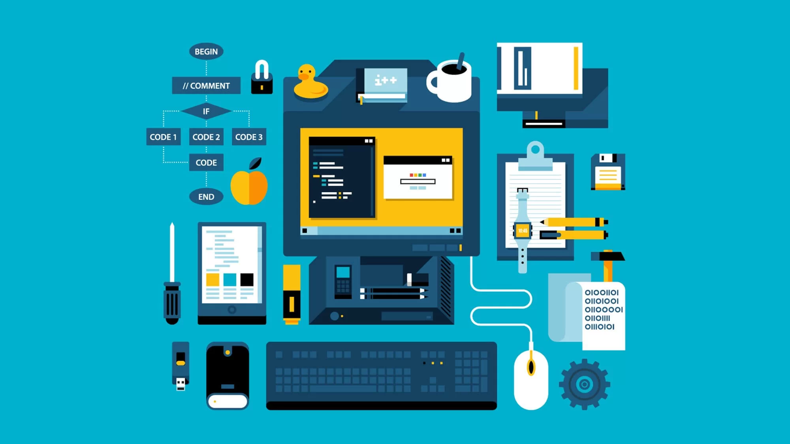
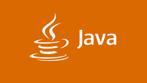

Apa itu RPL

RPL (Rekayasa Perangkat Lunak) atau Software Engineering
adalah jurusan SMK yang mempelajari tentang pembuatan, pengembangan, dan
pemeliharaan perangkat lunak atau software.
Di jurusan ini, kita belajar cara membuat aplikasi mulai dari website,
aplikasi mobile, desktop, sampai game. Kita juga belajar logika pemrograman,
database, desain UI/UX, dan masih banyak lagi.
Yang Dipelajari di RPL:
Beberapa mata pelajaran yang dipelajari di jurusan RPL antara lain pemrograman
web (HTML, CSS, JavaScript, PHP), pemrograman mobile (Java, Kotlin), database
(MySQL, PostgreSQL), dan bahasa pemrograman lainnya seperti Python, C++, dan Java.
Prospek Kerja Lulusan RPL:
Lulusan RPL punya banyak peluang karir seperti Web Developer, Mobile Developer,
Software Engineer, Full Stack Developer, UI/UX Designer, Database Administrator,
Quality Assurance, dan masih banyak lagi. Industri teknologi terus berkembang
pesat, jadi peluang kerja di bidang ini sangat luas.
Bahasa Pemrograman Populer
sebagai siswa RPl, kita perlu mengenal berbagai bahasa pemrograman yang ada banyak digunakan
di industri. Setiap bahasa punya keunggulan dan fungsinya masing masing. Berikut beberapa bahasa
pemrograman yang wajib siswa RPl ketahui nihhh, yuk kepoin.
1. HTML & CSS

Siapa sihhh yang ga kenal dengan duo maut ini, HTML (HyperText Markup Language) dan CSS
(Cascading
Style
Sheet)
adalah fondasi dari web development. HTML digunakan untuk membuat struktur halaman web,
sedangkan
CSS
untuk styling dan desain tampilan.
Ini adalah bahasa pertama yang harus dikuasai sebelum kamu terjun lebih dalam ke web
development.
2. Javascript

Ini nih bahasa andalan anak web development, JavaScript adalah bahasa pemrograman yang membuat
website
menjadi interaktif
dan dinamis. Dengan JavaScript, kita bisa membuat animasi, validasi form,
dan berbagai fitur interaktif lainnya. JavaScript juga bisa digunakan di
backend dengan Node.js.
3. Python

Sejak kapan ular jadi bahasa pemrograman? kenalan nih sama Python, Python adalah bahasa
pemrograman
yang
mudah dipelajari dan sangat powerful.
Python banyak digunakan untuk data science, machine learning, web development
dengan framework Django atau Flask, automation, dan masih banyak lagi.
Syntax-nya yang simple membuat Python cocok untuk pemula.
4. PHP

Buat variabelnya aja make dollar apalagi gajinya 🤑, sungkem dulu nih sama PHP. PHP adalah
bahasa
pemrograman server-side yang banyak digunakan untuk membuat
website dinamis. Banyak CMS populer seperti WordPress, Laravel framework,
dan sistem web lainnya dibuat dengan PHP. PHP sangat cocok untuk membuat
website dengan database.
5. Java

Bahasanya abang-abangan nihhh, ini lah Java, Java adalah bahasa pemrograman yang sangat populer
untuk
membuat aplikasi
mobile Android, aplikasi desktop, dan sistem enterprise. Java terkenal
dengan prinsip "Write Once, Run Anywhere" yang artinya code bisa berjalan
di berbagai platform.
Setiap bahasa pemrograman punya kelebihan masing-masing. Yang terpenting
adalah kuasai fundamental programming dulu, setelah itu akan lebih mudah
belajar bahasa pemrograman lainnya.
Tips Belajar Coding untuk pemula
Belajar coding butuh waktu dan kesabaran, tapi dengan strategi yang tepat,
prosesnya bisa lebih mudah. Berikut tips dari pengalaman aku:
Mulai Dari Dasar
Kuasai fundamental programming dulu seperti variabel, looping, dan kondisional.
Fondasi yang kuat akan memudahkan belajar hal advanced.
Praktek Lebih Banyak
Coding itu skill praktek. Jangan cuma baca teori, langsung coding dan buat
project sendiri. Learning by doing adalah cara paling efektif.
Jangan Takut Error
Error itu normal. Baca pesan error, cari solusinya, dan pahami kenapa itu
terjadi. Error adalah kesempatan belajar.
Buat Project Pribadi
Bikin project yang kamu suka. Website portfolio, to-do app, atau game sederhana.
Project pribadi bikin semangat belajar dan jadi portfolio kamu.
Konsisten & Bertanya
Coding 30 menit setiap hari lebih baik dari 5 jam seminggu sekali. Kalau
stuck, jangan ragu bertanya ke teman, guru, atau komunitas online.
Pesan terakhir: Setiap programmer hebat juga pernah jadi
pemula. Keep coding dan jangan pernah menyerah!